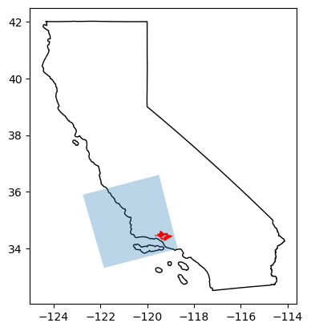
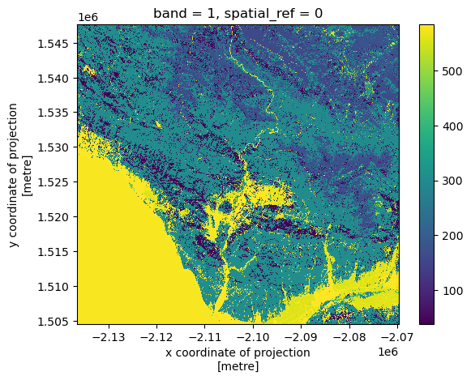
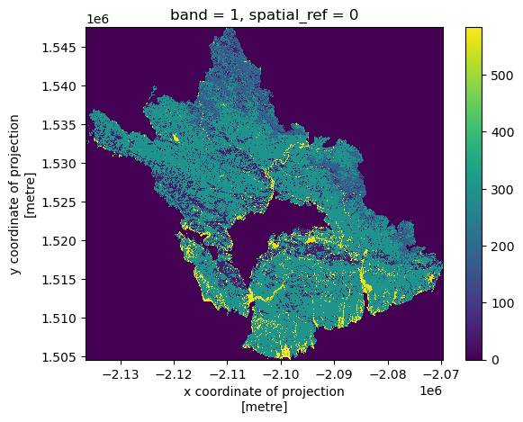
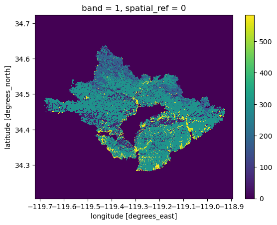
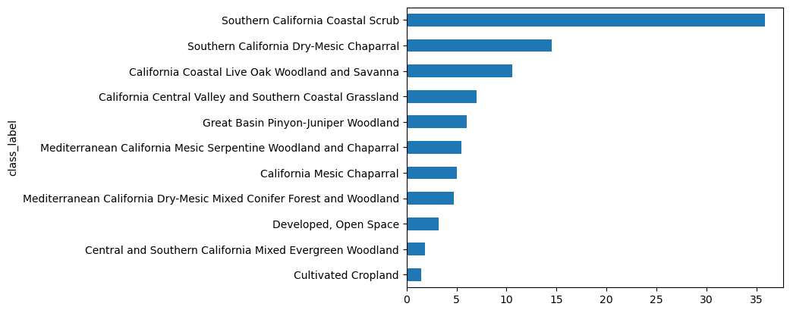
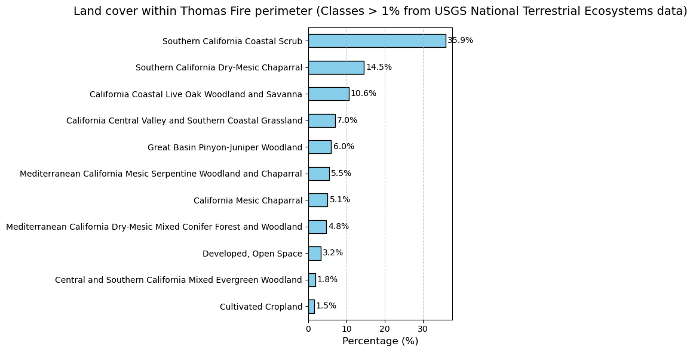
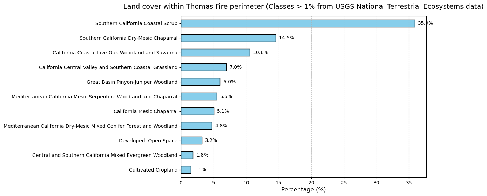
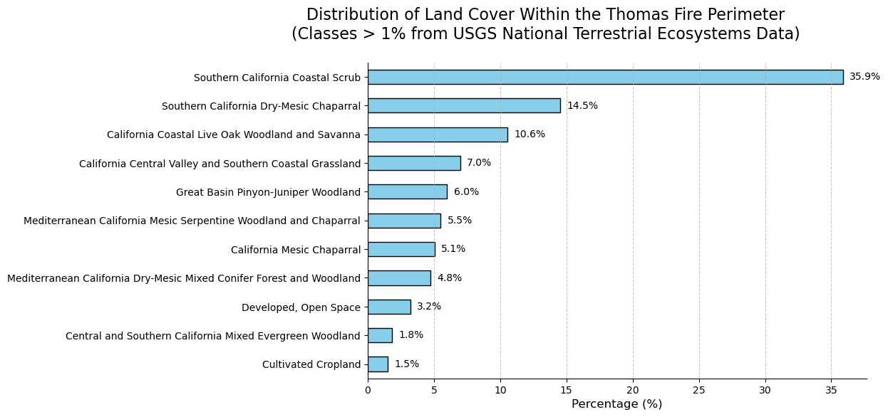

from matplotlib.colors import ListedColormap
import pystac_client
import numpy as np
import pandas as pd
import planetary_computer
import rasterio
from shapely import Polygon
import geopandas as gpd
import rioxarray as rioxr
import matplotlib.pyplot as plt
from shapely import box
from IPython.display import Image # To nicely display imagesImport Thomas fire perimeter
fire_perimeters = gpd.read_file('data/California_Fire_Perimeters_2017/California_Fire_Perimeters_2017.shp')
thomas_fire = fire_perimeters[fire_perimeters['FIRE_NAME']=='THOMAS']
thomas_fire.plot()
# Examine CRS of boundary
thomas_fire.crs<Projected CRS: EPSG:3857>
Name: WGS 84 / Pseudo-Mercator
Axis Info [cartesian]:
- X[east]: Easting (metre)
- Y[north]: Northing (metre)
Area of Use:
- name: World between 85.06°S and 85.06°N.
- bounds: (-180.0, -85.06, 180.0, 85.06)
Coordinate Operation:
- name: Popular Visualisation Pseudo-Mercator
- method: Popular Visualisation Pseudo Mercator
Datum: World Geodetic System 1984 ensemble
- Ellipsoid: WGS 84
- Prime Meridian: GreenwichRetrieve LULC data over fire perimeter
# Open MPC data catalog
catalog = pystac_client.Client.open(
"https://planetarycomputer.microsoft.com/api/stac/v1",
modifier=planetary_computer.sign_inplace,
)# Reproject fire perimeter to match CRS needed for search
thomas_fire = thomas_fire.to_crs('epsg:4326')
# Create bounding box for search
thomas_fire_bbox = list(thomas_fire.total_bounds)
search = catalog.search(collections=['gap'],
bbox=thomas_fire_bbox)
# Retrieve search items
items = search.item_collection()
print(f"Returned {len(items)} Items")
itemsReturned 1 Items- type "FeatureCollection"
features[] 1 items
0
- type "Feature"
- stac_version "1.0.0"
stac_extensions[] 2 items
- 0 "https://stac-extensions.github.io/projection/v1.0.0/schema.json"
- 1 "https://stac-extensions.github.io/label/v1.0.0/schema.json"
- id "gap_landfire_nationalterrestrialecosystems2011_-2361135_1762215_-2061135_1462215"
geometry
- type "Polygon"
coordinates[] 1 items
0[] 5 items
0[] 2 items
- 0 -118.69342028
- 1 33.99971716
1[] 2 items
- 0 -119.49405483
- 1 36.60171547
2[] 2 items
- 0 -122.74636922
- 1 35.90181191
3[] 2 items
- 0 -121.84549185
- 1 33.32121517
4[] 2 items
- 0 -118.69342028
- 1 33.99971716
bbox[] 4 items
- 0 -122.74636921535789
- 1 33.32121516682673
- 2 -118.69342027702393
- 3 36.60171546740399
properties
- datetime "2011-12-31T00:00:00Z"
- proj:wkt2 "PROJCS["NAD83 / Conus Albers",GEOGCS["NAD83",DATUM["North_American_Datum_1983",SPHEROID["GRS 1980",6378137,298.257222101,AUTHORITY["EPSG","7019"]],AUTHORITY["EPSG","6269"]],PRIMEM["Greenwich",0,AUTHORITY["EPSG","8901"]],UNIT["degree",0.0174532925199433,AUTHORITY["EPSG","9122"]],AUTHORITY["EPSG","4269"]],PROJECTION["Albers_Conic_Equal_Area"],PARAMETER["latitude_of_center",23],PARAMETER["longitude_of_center",-96],PARAMETER["standard_parallel_1",29.5],PARAMETER["standard_parallel_2",45.5],PARAMETER["false_easting",0],PARAMETER["false_northing",0],UNIT["metre",1,AUTHORITY["EPSG","9001"]],AXIS["Easting",EAST],AXIS["Northing",NORTH],AUTHORITY["EPSG","5070"]]"
- label:type "raster"
proj:shape[] 2 items
- 0 10000
- 1 10000
- end_datetime "2011-12-31T00:00:00+00:00"
label:classes[] 1 items
0
- name ""
classes[] 585 items
- 0 "0"
- 1 "South Florida Bayhead Swamp"
- 2 "South Florida Cypress Dome"
- 3 "South Florida Dwarf Cypress Savanna"
- 4 "South Florida Mangrove Swamp"
- 5 "South Florida Hardwood Hammock"
- 6 "Southeast Florida Coastal Strand and Maritime Hammock"
- 7 "Southwest Florida Coastal Strand and Maritime Hammock"
- 8 "South Florida Pine Rockland"
- 9 "Atlantic Coastal Plain Fall-line Sandhills Longleaf Pine Woodland - Open Understory"
- 10 "Atlantic Coastal Plain Fall-line Sandhills Longleaf Pine Woodland - Scrub/Shrub Understory"
- 11 "Atlantic Coastal Plain Upland Longleaf Pine Woodland"
- 12 "Atlantic Coastal Plain Xeric River Dune"
- 13 "East Gulf Coastal Plain Interior Upland Longleaf Pine Woodland - Open Understory Modifier"
- 14 "East Gulf Coastal Plain Interior Upland Longleaf Pine Woodland - Scrub/Shrub Modifier"
- 15 "Florida Longleaf Pine Sandhill - Scrub/Shrub Understory Modifier"
- 16 "Florida Longleaf Pine Sandhill- Open Understory Modifier"
- 17 "West Gulf Coastal Plain Upland Longleaf Pine Forest and Woodland"
- 18 "Atlantic Coastal Plain Central Maritime Forest"
- 19 "Atlantic Coastal Plain Southern Maritime Forest"
- 20 "Central and South Texas Coastal Fringe Forest and Woodland"
- 21 "East Gulf Coastal Plain Limestone Forest"
- 22 "East Gulf Coastal Plain Maritime Forest"
- 23 "East Gulf Coastal Plain Southern Loess Bluff Forest"
- 24 "East Gulf Coastal Plain Southern Mesic Slope Forest"
- 25 "Mississippi Delta Maritime Forest"
- 26 "Southern Coastal Plain Dry Upland Hardwood Forest"
- 27 "Southern Coastal Plain Oak Dome and Hammock"
- 28 "West Gulf Coastal Plain Chenier and Upper Texas Coastal Fringe Forest and Woodland"
- 29 "West Gulf Coastal Plain Mesic Hardwood Forest"
- 30 "East-Central Texas Plains Pine Forest and Woodland"
- 31 "West Gulf Coastal Plain Pine-Hardwood Forest"
- 32 "West Gulf Coastal Plain Sandhill Oak and Shortleaf Pine Forest and Woodland"
- 33 "Atlantic Coastal Plain Fall-Line Sandhills Longleaf Pine Woodland - Loblolly Modifier"
- 34 "Deciduous Plantations"
- 35 "East Gulf Coastal Plain Interior Upland Longleaf Pine Woodland - Loblolly Modifier"
- 36 "East Gulf Coastal Plain Interior Upland Longleaf Pine Woodland - Offsite Hardwood Modifier"
- 37 "East Gulf Coastal Plain Near-Coast Pine Flatwoods - Offsite Hardwood Modifier"
- 38 "Evergreen Plantation or Managed Pine"
- 39 "California Central Valley Mixed Oak Savanna"
- 40 "California Coastal Closed-Cone Conifer Forest and Woodland"
- 41 "California Coastal Live Oak Woodland and Savanna"
- 42 "California Lower Montane Blue Oak-Foothill Pine Woodland and Savanna"
- 43 "Central and Southern California Mixed Evergreen Woodland"
- 44 "Mediterranean California Lower Montane Black Oak-Conifer Forest and Woodland"
- 45 "Southern California Oak Woodland and Savanna"
- 46 "Madrean Encinal"
- 47 "Madrean Pinyon-Juniper Woodland"
- 48 "Madrean Pine-Oak Forest and Woodland"
- 49 "Madrean Upper Montane Conifer-Oak Forest and Woodland"
- 50 "Edwards Plateau Dry-Mesic Slope Forest and Woodland"
- 51 "Edwards Plateau Limestone Savanna and Woodland"
- 52 "Edwards Plateau Mesic Canyon"
- 53 "Llano Uplift Acidic Forest, Woodland and Glade"
- 54 "East Cascades Oak-Ponderosa Pine Forest and Woodland"
- 55 "Mediterranean California Mixed Evergreen Forest"
- 56 "Mediterranean California Mixed Oak Woodland"
- 57 "North Pacific Dry Douglas-fir-(Madrone) Forest and Woodland"
- 58 "North Pacific Oak Woodland"
- 59 "Edwards Plateau Limestone Shrubland"
- 60 "Allegheny-Cumberland Dry Oak Forest and Woodland - Hardwood"
- 61 "Allegheny-Cumberland Dry Oak Forest and Woodland - Pine Modifier"
- 62 "Central and Southern Appalachian Montane Oak Forest"
- 63 "Central and Southern Appalachian Northern Hardwood Forest"
- 64 "Central Appalachian Oak and Pine Forest"
- 65 "Crosstimbers Oak Forest and Woodland"
- 66 "East Gulf Coastal Plain Black Belt Calcareous Prairie and Woodland - Woodland Modifier"
- 67 "East Gulf Coastal Plain Northern Dry Upland Hardwood Forest"
- 68 "East Gulf Coastal Plain Northern Loess Plain Oak-Hickory Upland - Hardwood Modifier"
- 69 "East Gulf Coastal Plain Northern Loess Plain Oak-Hickory Upland - Juniper Modifier"
- 70 "East-Central Texas Plains Post Oak Savanna and Woodland"
- 71 "Lower Mississippi River Dune Woodland and Forest"
- 72 "Mississippi River Alluvial Plain Dry-Mesic Loess Slope Forest"
- 73 "North-Central Interior Dry Oak Forest and Woodland"
- 74 "North-Central Interior Dry-Mesic Oak Forest and Woodland"
- 75 "Northeastern Interior Dry Oak Forest - Mixed Modifier"
- 76 "Northeastern Interior Dry Oak Forest - Virginia/Pitch Pine Modifier"
- 77 "Northeastern Interior Dry Oak Forest-Hardwood Modifier"
- 78 "Northeastern Interior Dry-Mesic Oak Forest"
- 79 "Northern Atlantic Coastal Plain Dry Hardwood Forest"
- 80 "Crowleys Ridge Sand Forest"
- 81 "Ouachita Montane Oak Forest"
- 82 "Ozark-Ouachita Dry Oak Woodland"
- 83 "Ozark-Ouachita Dry-Mesic Oak Forest"
- 84 "Southern and Central Appalachian Oak Forest"
- 85 "Southern and Central Appalachian Oak Forest - Xeric"
- 86 "Southern Interior Low Plateau Dry-Mesic Oak Forest"
- 87 "Southern Ridge and Valley Dry Calcareous Forest"
- 88 "Southern Ridge and Valley Dry Calcareous Forest - Pine modifier"
- 89 "East Gulf Coastal Plain Northern Dry Upland Hardwood Forest - Offsite Pine Modifier"
- 90 "Managed Tree Plantation"
- 91 "Ruderal forest"
- 92 "Southern Piedmont Dry Oak-(Pine) Forest - Loblolly Pine Modifier"
- 93 "Acadian Low-Elevation Spruce-Fir-Hardwood Forest"
- 94 "Acadian-Appalachian Montane Spruce-Fir Forest"
- 95 "Appalachian Hemlock-Hardwood Forest"
- 96 "Central and Southern Appalachian Spruce-Fir Forest"
- 97 "0"
- 98 "Laurentian-Acadian Northern Hardwoods Forest"
- 99 "Laurentian-Acadian Northern Pine-(Oak) Forest"
- 100 "Laurentian-Acadian Pine-Hemlock-Hardwood Forest"
- 101 "Paleozoic Plateau Bluff and Talus"
- 102 "Southern Appalachian Northern Hardwood Forest"
- 103 "Atlantic Coastal Plain Dry and Dry-Mesic Oak Forest"
- 104 "Atlantic Coastal Plain Fall-line Sandhills Longleaf Pine Woodland - Offsite Hardwood"
- 105 "East Gulf Coastal Plain Interior Shortleaf Pine-Oak Forest - Hardwood Modifier"
- 106 "East Gulf Coastal Plain Interior Shortleaf Pine-Oak Forest - Mixed Modifier"
- 107 "Ozark-Ouachita Shortleaf Pine-Bluestem Woodland"
- 108 "Ozark-Ouachita Shortleaf Pine-Oak Forest and Woodland"
- 109 "Southeastern Interior Longleaf Pine Woodland"
- 110 "Southern Appalachian Low Mountain Pine Forest"
- 111 "Southern Piedmont Dry Oak-(Pine) Forest"
- 112 "Southern Piedmont Dry Oak-(Pine) Forest - Hardwood Modifier"
- 113 "Southern Piedmont Dry Oak-(Pine) Forest - Mixed Modifier"
- 114 "Southern Piedmont Dry Oak-Heath Forest - Mixed Modifier"
- 115 "Eastern Great Plains Tallgrass Aspen Parkland"
- 116 "Northwestern Great Plains Aspen Forest and Parkland"
- 117 "Northwestern Great Plains Shrubland"
- 118 "Western Great Plains Dry Bur Oak Forest and Woodland"
- 119 "Western Great Plains Wooded Draw and Ravine"
- 120 "Southern Atlantic Coastal Plain Mesic Hardwood Forest"
- 121 "East Gulf Coastal Plain Northern Loess Bluff Forest"
- 122 "East Gulf Coastal Plain Northern Mesic Hardwood Forest"
- 123 "North-Central Interior Beech-Maple Forest"
- 124 "North-Central Interior Maple-Basswood Forest"
- 125 "Ozark-Ouachita Mesic Hardwood Forest"
- 126 "South-Central Interior Mesophytic Forest"
- 127 "Southern and Central Appalachian Cove Forest"
- 128 "Crowleys Ridge Mesic Loess Slope Forest"
- 129 "Southern Piedmont Mesic Forest"
- 130 "Appalachian Shale Barrens"
- 131 "Atlantic Coastal Plain Northern Maritime Forest"
- 132 "Laurentian Pine-Oak Barrens"
- 133 "Northeastern Interior Pine Barrens"
- 134 "Northern Atlantic Coastal Plain Pitch Pine Barrens"
- 135 "Southern Appalachian Montane Pine Forest and Woodland"
- 136 "East Cascades Mesic Montane Mixed-Conifer Forest and Woodland"
- 137 "Middle Rocky Mountain Montane Douglas-fir Forest and Woodland"
- 138 "Northern Rocky Mountain Dry-Mesic Montane Mixed Conifer Forest"
- 139 "Northern Rocky Mountain Foothill Conifer Wooded Steppe"
- 140 "Northern Rocky Mountain Mesic Montane Mixed Conifer Forest"
- 141 "Northern Rocky Mountain Ponderosa Pine Woodland and Savanna"
- 142 "Northern Rocky Mountain Western Larch Savanna"
- 143 "Northwestern Great Plains - Black Hills Ponderosa Pine Woodland and Savanna"
- 144 "Rocky Mountain Foothill Limber Pine-Juniper Woodland"
- 145 "Inter-Mountain Basins Aspen-Mixed Conifer Forest and Woodland"
- 146 "Inter-Mountain Basins Subalpine Limber-Bristlecone Pine Woodland"
- 147 "Northern Rocky Mountain Subalpine Woodland and Parkland"
- 148 "Rocky Mountain Aspen Forest and Woodland"
- 149 "Rocky Mountain Lodgepole Pine Forest"
- 150 "Rocky Mountain Poor-Site Lodgepole Pine Forest"
- 151 "Rocky Mountain Subalpine Dry-Mesic Spruce-Fir Forest and Woodland"
- 152 "Rocky Mountain Subalpine Mesic Spruce-Fir Forest and Woodland"
- 153 "Rocky Mountain Subalpine-Montane Limber-Bristlecone Pine Woodland"
- 154 "Rocky Mountain Bigtooth Maple Ravine Woodland"
- 155 "Southern Rocky Mountain Dry-Mesic Montane Mixed Conifer Forest and Woodland"
- 156 "Southern Rocky Mountain Mesic Montane Mixed Conifer Forest and Woodland"
- 157 "Southern Rocky Mountain Ponderosa Pine Savanna"
- 158 "Southern Rocky Mountain Ponderosa Pine Woodland"
- 159 "California Montane Jeffrey Pine-(Ponderosa Pine) Woodland"
- 160 "Klamath-Siskiyou Lower Montane Serpentine Mixed Conifer Woodland"
- 161 "Klamath-Siskiyou Upper Montane Serpentine Mixed Conifer Woodland"
- 162 "Mediterranean California Dry-Mesic Mixed Conifer Forest and Woodland"
- 163 "Mediterranean California Mesic Mixed Conifer Forest and Woodland"
- 164 "Sierran-Intermontane Desert Western White Pine-White Fir Woodland"
- 165 "California Coastal Redwood Forest"
- 166 "North Pacific Broadleaf Landslide Forest and Shrubland"
- 167 "North Pacific Dry-Mesic Silver Fir-Western Hemlock-Douglas-fir Forest"
- 168 "North Pacific Hypermaritime Sitka Spruce Forest"
- 169 "North Pacific Hypermaritime Western Red-cedar-Western Hemlock Forest"
- 170 "North Pacific Lowland Mixed Hardwood-Conifer Forest and Woodland"
- 171 "North Pacific Maritime Dry-Mesic Douglas-fir-Western Hemlock Forest"
- 172 "North Pacific Maritime Mesic-Wet Douglas-fir-Western Hemlock Forest"
- 173 "North Pacific Mesic Western Hemlock-Silver Fir Forest"
- 174 "North Pacific Wooded Volcanic Flowage"
- 175 "Mediterranean California Red Fir Forest"
- 176 "Mediterranean California Subalpine Woodland"
- 177 "North Pacific Maritime Mesic Subalpine Parkland"
- 178 "North Pacific Mountain Hemlock Forest"
- 179 "Northern California Mesic Subalpine Woodland"
- 180 "Northern Pacific Mesic Subalpine Woodland"
- 181 "Sierra Nevada Subalpine Lodgepole Pine Forest and Woodland"
- 182 "Columbia Plateau Western Juniper Woodland and Savanna"
- 183 "Great Basin Pinyon-Juniper Woodland"
- 184 "Inter-Mountain Basins Curl-leaf Mountain Mahogany Woodland and Shrubland"
- 185 "Inter-Mountain Basins Juniper Savanna"
- 186 "Colorado Plateau Pinyon-Juniper Shrubland"
- 187 "Colorado Plateau Pinyon-Juniper Woodland"
- 188 "Southern Rocky Mountain Juniper Woodland and Savanna"
- 189 "Southern Rocky Mountain Pinyon-Juniper Woodland"
- 190 "Northwestern Great Plains Floodplain"
- 191 "Northwestern Great Plains Riparian"
- 192 "Western Great Plains Floodplain"
- 193 "Western Great Plains Floodplain Systems"
- 194 "Western Great Plains Riparian Woodland and Shrubland"
- 195 "Central Appalachian Floodplain - Forest Modifier"
- 196 "Central Appalachian Riparian - Forest Modifier"
- 197 "Central Interior and Appalachian Floodplain Systems"
- 198 "Central Interior and Appalachian Riparian Systems"
- 199 "Laurentian-Acadian Floodplain Systems"
- 200 "Ozark-Ouachita Riparian"
- 201 "South-Central Interior Large Floodplain"
- 202 "South-Central Interior Large Floodplain - Forest Modifier"
- 203 "South-Central Interior Small Stream and Riparian"
- 204 "North-Central Interior and Appalachian Rich Swamp"
- 205 "0"
- 206 "0"
- 207 "Laurentian-Acadian Swamp Systems"
- 208 "North-Central Interior Wet Flatwoods"
- 209 "0"
- 210 "South-Central Interior / Upper Coastal Plain Wet Flatwoods"
- 211 "0"
- 212 "Southern Piedmont/Ridge and Valley Upland Depression Swamp"
- 213 "Atlantic Coastal Plain Blackwater Stream Floodplain Forest - Forest Modifier"
- 214 "Atlantic Coastal Plain Brownwater Stream Floodplain Forest"
- 215 "Atlantic Coastal Plain Northern Tidal Wooded Swamp"
- 216 "Atlantic Coastal Plain Small Blackwater River Floodplain Forest"
- 217 "Atlantic Coastal Plain Small Brownwater River Floodplain Forest"
- 218 "Atlantic Coastal Plain Southern Tidal Wooded Swamp"
- 219 "East Gulf Coastal Plain Large River Floodplain Forest - Forest Modifier"
- 220 "East Gulf Coastal Plain Small Stream and River Floodplain Forest"
- 221 "East Gulf Coastal Plain Tidal Wooded Swamp"
- 222 "0"
- 223 "Southeastern Great Plains Riparian Forest"
- 224 "Southeastern Great Plains Floodplain Forest"
- 225 "Mississippi River Bottomland Depression"
- 226 "Mississippi River Floodplain and Riparian Forest"
- 227 "Mississippi River Low Floodplain (Bottomland) Forest"
- 228 "Mississippi River Riparian Forest"
- 229 "Red River Large Floodplain Forest"
- 230 "Southern Coastal Plain Blackwater River Floodplain Forest"
- 231 "Southern Piedmont Large Floodplain Forest - Forest Modifier"
- 232 "Southern Piedmont Small Floodplain and Riparian Forest"
- 233 "West Gulf Coastal Plain Large River Floodplain Forest"
- 234 "West Gulf Coastal Plain Near-Coast Large River Swamp"
- 235 "West Gulf Coastal Plain Small Stream and River Forest"
- 236 "Atlantic Coastal Plain Streamhead Seepage Swamp - Pocosin - and Baygall"
- 237 "Gulf and Atlantic Coastal Plain Swamp Systems"
- 238 "Southern Coastal Plain Hydric Hammock"
- 239 "Southern Coastal Plain Seepage Swamp and Baygall"
- 240 "West Gulf Coastal Plain Seepage Swamp and Baygall"
- 241 "Atlantic Coastal Plain Nonriverine Swamp and Wet Hardwood Forest - Taxodium/Nyssa Modifier"
- 242 "Atlantic Coastal Plain Nonriverine Swamp and Wet Hardwood Forest - Oak Dominated Modifier"
- 243 "East Gulf Coastal Plain Southern Loblolly-Hardwood Flatwoods"
- 244 "Lower Mississippi River Bottomland Depressions - Forest Modifier"
- 245 "Lower Mississippi River Flatwoods"
- 246 "Northern Atlantic Coastal Plain Basin Swamp and Wet Hardwood Forest"
- 247 "Southern Coastal Plain Nonriverine Basin Swamp"
- 248 "Southern Coastal Plain Nonriverine Basin Swamp - Okefenokee Bay/Gum Modifier"
- 249 "Southern Coastal Plain Nonriverine Basin Swamp - Okefenokee Pine Modifier"
- 250 "Southern Coastal Plain Nonriverine Basin Swamp - Okefenokee Taxodium Modifier"
- 251 "West Gulf Coastal Plain Nonriverine Wet Hardwood Flatwoods"
- 252 "West Gulf Coastal Plain Pine-Hardwood Flatwoods"
- 253 "Edwards Plateau Riparian"
- 254 "Atlantic Coastal Plain Clay-Based Carolina Bay Forested Wetland"
- 255 "Atlantic Coastal Plain Clay-Based Carolina Bay Herbaceous Wetland"
- 256 "Atlantic Coastal Plain Southern Wet Pine Savanna and Flatwoods"
- 257 "Central Atlantic Coastal Plain Wet Longleaf Pine Savanna and Flatwoods"
- 258 "Central Florida Pine Flatwoods"
- 259 "East Gulf Coastal Plain Near-Coast Pine Flatwoods"
- 260 "East Gulf Coastal Plain Near-Coast Pine Flatwoods - Open Understory Modifier"
- 261 "East Gulf Coastal Plain Near-Coast Pine Flatwoods - Scrub/Shrub Understory Modifier"
- 262 "South Florida Pine Flatwoods"
- 263 "Southern Coastal Plain Nonriverine Cypress Dome"
- 264 "West Gulf Coastal Plain Wet Longleaf Pine Savanna and Flatwoods"
- 265 "Columbia Basin Foothill Riparian Woodland and Shrubland"
- 266 "Great Basin Foothill and Lower Montane Riparian Woodland and Shrubland"
- 267 "0"
- 268 "Northern Rocky Mountain Conifer Swamp"
- 269 "Northern Rocky Mountain Lower Montane Riparian Woodland and Shrubland"
- 270 "Rocky Mountain Lower Montane Riparian Woodland and Shrubland"
- 271 "Rocky Mountain Montane Riparian Systems"
- 272 "Rocky Mountain Subalpine-Montane Riparian Woodland"
- 273 "North Pacific Hardwood-Conifer Swamp"
- 274 "North Pacific Lowland Riparian Forest and Shrubland"
- 275 "North Pacific Montane Riparian Woodland and Shrubland"
- 276 "North Pacific Shrub Swamp"
- 277 "California Central Valley Riparian Woodland and Shrubland"
- 278 "Mediterranean California Foothill and Lower Montane Riparian Woodland"
- 279 "Mediterranean California Serpentine Foothill and Lower Montane Riparian Woodland and Seep"
- 280 "North American Warm Desert Lower Montane Riparian Woodland and Shrubland"
- 281 "North American Warm Desert Riparian Systems"
- 282 "North American Warm Desert Riparian Woodland and Shrubland"
- 283 "Tamaulipan Floodplain"
- 284 "Tamaulipan Riparian Systems"
- 285 "Boreal Aspen-Birch Forest"
- 286 "Boreal Jack Pine-Black Spruce Forest"
- 287 "Boreal White Spruce-Fir-Hardwood Forest"
- 288 "Boreal-Laurentian Conifer Acidic Swamp and Treed Poor Fen"
- 289 "Eastern Boreal Floodplain"
- 290 "South Florida Shell Hash Beach"
- 291 "Southeast Florida Beach"
- 292 "Southwest Florida Beach"
- 293 "South Florida Everglades Sawgrass Marsh"
- 294 "South Florida Freshwater Slough and Gator Hole"
- 295 "South Florida Wet Marl Prairie"
- 296 "California Maritime Chaparral"
- 297 "California Mesic Chaparral"
- 298 "California Xeric Serpentine Chaparral"
- 299 "Klamath-Siskiyou Xeromorphic Serpentine Savanna and Chaparral"
- 300 "Mediterranean California Mesic Serpentine Woodland and Chaparral"
- 301 "Northern and Central California Dry-Mesic Chaparral"
- 302 "Southern California Dry-Mesic Chaparral"
- 303 "Southern California Coastal Scrub"
- 304 "California Central Valley and Southern Coastal Grassland"
- 305 "California Mesic Serpentine Grassland"
- 306 "Columbia Basin Foothill and Canyon Dry Grassland"
- 307 "Columbia Basin Palouse Prairie"
- 308 "North Pacific Alpine and Subalpine Dry Grassland"
- 309 "North Pacific Montane Grassland"
- 310 "North Pacific Montane Shrubland"
- 311 "Northern Rocky Mountain Lower Montane, Foothill and Valley Grassland"
- 312 "Northern Rocky Mountain Montane-Foothill Deciduous Shrubland"
- 313 "Northern Rocky Mountain Subalpine Deciduous Shrubland"
- 314 "Northern Rocky Mountain Subalpine-Upper Montane Grassland"
- 315 "Southern Rocky Mountain Montane-Subalpine Grassland"
- 316 "Rocky Mountain Gambel Oak-Mixed Montane Shrubland"
- 317 "Rocky Mountain Lower Montane-Foothill Shrubland"
- 318 "California Northern Coastal Grassland"
- 319 "North Pacific Herbaceous Bald and Bluff"
- 320 "North Pacific Hypermaritime Shrub and Herbaceous Headland"
- 321 "Willamette Valley Upland Prairie and Savanna"
- 322 "Mediterranean California Subalpine Meadow"
- 323 "Rocky Mountain Subalpine-Montane Mesic Meadow"
- 324 "Central Mixedgrass Prairie"
- 325 "Northwestern Great Plains Mixedgrass Prairie"
- 326 "Western Great Plains Foothill and Piedmont Grassland"
- 327 "Western Great Plains Tallgrass Prairie"
- 328 "Western Great Plains Sand Prairie"
- 329 "Western Great Plains Sandhill Steppe"
- 330 "Western Great Plains Mesquite Woodland and Shrubland"
- 331 "Western Great Plains Shortgrass Prairie"
- 332 "Arkansas Valley Prairie and Woodland"
- 333 "Central Tallgrass Prairie"
- 334 "North-Central Interior Oak Savanna"
- 335 "North-Central Interior Sand and Gravel Tallgrass Prairie"
- 336 "North-Central Oak Barrens"
- 337 "Northern Tallgrass Prairie"
- 338 "Southeastern Great Plains Tallgrass Prairie"
- 339 "Texas Blackland Tallgrass Prairie"
- 340 "Texas-Louisiana Coastal Prairie"
- 341 "Central Appalachian Pine-Oak Rocky Woodland"
- 342 "Southern Appalachian Grass and Shrub Bald"
- 343 "Southern Appalachian Grass and Shrub Bald - Herbaceous Modifier"
- 344 "Southern Appalachian Grass and Shrub Bald - Shrub Modifier"
- 345 "Central Appalachian Alkaline Glade and Woodland"
- 346 "Central Interior Highlands Calcareous Glade and Barrens"
- 347 "Central Interior Highlands Dry Acidic Glade and Barrens"
- 348 "Cumberland Sandstone Glade and Barrens"
- 349 "Great Lakes Alvar"
- 350 "Nashville Basin Limestone Glade"
- 351 "Southern Ridge and Valley / Cumberland Dry Calcareous Forest"
- 352 "Southern Piedmont Glade and Barrens"
- 353 "East Gulf Coastal Plain Black Belt Calcareous Prairie and Woodland - Herbaceous Modifier"
- 354 "East Gulf Coastal Plain Jackson Prairie and Woodland"
- 355 "Eastern Highland Rim Prairie and Barrens - Dry Modifier"
- 356 "Coahuilan Chaparral"
- 357 "Madrean Oriental Chaparral"
- 358 "Mogollon Chaparral"
- 359 "Sonora-Mojave Semi-Desert Chaparral"
- 360 "California Montane Woodland and Chaparral"
- 361 "Great Basin Semi-Desert Chaparral"
- 362 "Florida Dry Prairie"
- 363 "Florida Peninsula Inland Scrub"
- 364 "West Gulf Coastal Plain Catahoula Barrens"
- 365 "West Gulf Coastal Plain Nepheline Syenite Glade"
- 366 "East Gulf Coastal Plain Jackson Plain Dry Flatwoods - Open Understory Modifier"
- 367 "West Gulf Coastal Plain Northern Calcareous Prairie"
- 368 "West Gulf Coastal Plain Southern Calcareous Prairie"
- 369 "Acadian-Appalachian Subalpine Woodland and Heath-Krummholz"
- 370 "Atlantic and Gulf Coastal Plain Interdunal Wetland"
- 371 "Atlantic Coastal Plain Southern Dune and Maritime Grassland"
- 372 "Central and Upper Texas Coast Dune and Coastal Grassland"
- 373 "East Gulf Coastal Plain Dune and Coastal Grassland"
- 374 "Great Lakes Dune"
- 375 "Northern Atlantic Coastal Plain Dune and Swale"
- 376 "Northern Atlantic Coastal Plain Heathland and Grassland"
- 377 "South Texas Dune and Coastal Grassland"
- 378 "South Texas Sand Sheet Grassland"
- 379 "Southwest Florida Dune and Coastal Grassland"
- 380 "North Pacific Coastal Cliff and Bluff"
- 381 "North Pacific Maritime Coastal Sand Dune and Strand"
- 382 "Northern California Coastal Scrub"
- 383 "Mediterranean California Coastal Bluff"
- 384 "Mediterranean California Northern Coastal Dune"
- 385 "Mediterranean California Southern Coastal Dune"
- 386 "Atlantic Coastal Plain Northern Sandy Beach"
- 387 "Atlantic Coastal Plain Sea Island Beach"
- 388 "Atlantic Coastal Plain Southern Beach"
- 389 "Florida Panhandle Beach Vegetation"
- 390 "Louisiana Beach"
- 391 "Northern Atlantic Coastal Plain Sandy Beach"
- 392 "Texas Coastal Bend Beach"
- 393 "Upper Texas Coast Beach"
- 394 "0"
- 395 "Mediterranean California Serpentine Fen"
- 396 "Mediterranean California Subalpine-Montane Fen"
- 397 "North Pacific Bog and Fen"
- 398 "Rocky Mountain Subalpine-Montane Fen"
- 399 "Atlantic Coastal Plain Peatland Pocosin"
- 400 "Southern and Central Appalachian Bog and Fen"
- 401 "Atlantic Coastal Plain Central Fresh-Oligohaline Tidal Marsh"
- 402 "Atlantic Coastal Plain Embayed Region Tidal Freshwater Marsh"
- 403 "Atlantic Coastal Plain Northern Fresh and Oligohaline Tidal Marsh"
- 404 "Florida Big Bend Fresh-Oligohaline Tidal Marsh"
- 405 "Atlantic Coastal Plain Depression Pondshore"
- 406 "Atlantic Coastal Plain Large Natural Lakeshore"
- 407 "Central Florida Herbaceous Pondshore"
- 408 "Central Florida Herbaceous Seep"
- 409 "East Gulf Coastal Plain Savanna and Wet Prairie"
- 410 "East Gulf Coastal Plain Depression Pondshore"
- 411 "Floridian Highlands Freshwater Marsh"
- 412 "Southern Coastal Plain Herbaceous Seepage Bog"
- 413 "Southern Coastal Plain Nonriverine Basin Swamp - Okefenokee Clethra Modifier"
- 414 "Southern Coastal Plain Nonriverine Basin Swamp - Okefenokee Nupea Modifier"
- 415 "Texas-Louisiana Coastal Prairie Slough"
- 416 "Central Interior and Appalachian Shrub-Herbaceous Wetland Systems"
- 417 "Great Lakes Coastal Marsh Systems"
- 418 "0"
- 419 "0"
- 420 "Laurentian-Acadian Shrub-Herbaceous Wetland Systems"
- 421 "0"
- 422 "Eastern Great Plains Wet Meadow, Prairie and Marsh"
- 423 "Great Lakes Wet-Mesic Lakeplain Prairie"
- 424 "Great Plains Prairie Pothole"
- 425 "Western Great Plains Closed Depression Wetland"
- 426 "Western Great Plains Depressional Wetland Systems"
- 427 "Western Great Plains Open Freshwater Depression Wetland"
- 428 "Cumberland Riverscour"
- 429 "Inter-Mountain Basins Interdunal Swale Wetland"
- 430 "North Pacific Avalanche Chute Shrubland"
- 431 "North Pacific Intertidal Freshwater Wetland"
- 432 "Temperate Pacific Freshwater Emergent Marsh"
- 433 "Temperate Pacific Freshwater Mudflat"
- 434 "Columbia Plateau Vernal Pool"
- 435 "Northern California Claypan Vernal Pool"
- 436 "Northern Rocky Mountain Wooded Vernal Pool"
- 437 "Columbia Plateau Silver Sagebrush Seasonally Flooded Shrub-Steppe"
- 438 "Rocky Mountain Alpine-Montane Wet Meadow"
- 439 "Rocky Mountain Subalpine-Montane Riparian Shrubland"
- 440 "Temperate Pacific Montane Wet Meadow"
- 441 "Willamette Valley Wet Prairie"
- 442 "Chihuahuan-Sonoran Desert Bottomland and Swale Grassland"
- 443 "North American Arid West Emergent Marsh"
- 444 "North American Warm Desert Riparian Mesquite Bosque"
- 445 "Western Great Plains Saline Depression Wetland"
- 446 "Acadian Salt Marsh and Estuary Systems"
- 447 "Atlantic Coastal Plain Central Salt and Brackish Tidal Marsh"
- 448 "Atlantic Coastal Plain Embayed Region Tidal Salt and Brackish Marsh"
- 449 "Atlantic Coastal Plain Indian River Lagoon Tidal Marsh"
- 450 "Atlantic Coastal Plain Northern Tidal Salt Marsh"
- 451 "Florida Big Bend Salt-Brackish Tidal Marsh"
- 452 "Gulf and Atlantic Coastal Plain Tidal Marsh Systems"
- 453 "Mississippi Sound Salt and Brackish Tidal Marsh"
- 454 "Texas Saline Coastal Prairie"
- 455 "Temperate Pacific Tidal Salt and Brackish Marsh"
- 456 "Inter-Mountain Basins Alkaline Closed Depression"
- 457 "Inter-Mountain Basins Greasewood Flat"
- 458 "Inter-Mountain Basins Playa"
- 459 "North American Warm Desert Playa"
- 460 "Apacherian-Chihuahuan Mesquite Upland Scrub"
- 461 "Apacherian-Chihuahuan Semi-Desert Grassland and Steppe"
- 462 "Chihuahuan Creosotebush, Mixed Desert and Thorn Scrub"
- 463 "Chihuahuan Gypsophilous Grassland and Steppe"
- 464 "Chihuahuan Loamy Plains Desert Grassland"
- 465 "Chihuahuan Mixed Desert and Thorn Scrub"
- 466 "Chihuahuan Sandy Plains Semi-Desert Grassland"
- 467 "Chihuahuan Stabilized Coppice Dune and Sand Flat Scrub"
- 468 "Chihuahuan Succulent Desert Scrub"
- 469 "Madrean Juniper Savanna"
- 470 "Mojave Mid-Elevation Mixed Desert Scrub"
- 471 "North American Warm Desert Active and Stabilized Dune"
- 472 "Sonora-Mojave Creosotebush-White Bursage Desert Scrub"
- 473 "Sonoran Mid-Elevation Desert Scrub"
- 474 "Sonoran Paloverde-Mixed Cacti Desert Scrub"
- 475 "Chihuahuan Mixed Salt Desert Scrub"
- 476 "Sonora-Mojave Mixed Salt Desert Scrub"
- 477 "North American Warm Desert Wash"
- 478 "South Texas Lomas"
- 479 "Tamaulipan Calcareous Thornscrub"
- 480 "Tamaulipan Clay Grassland"
- 481 "Tamaulipan Mesquite Upland Scrub"
- 482 "Tamaulipan Mixed Deciduous Thornscrub"
- 483 "Tamaulipan Savanna Grassland"
- 484 "Inter-Mountain Basins Mat Saltbush Shrubland"
- 485 "Inter-Mountain Basins Mixed Salt Desert Scrub"
- 486 "Inter-Mountain Basins Wash"
- 487 "Columbia Plateau Steppe and Grassland"
- 488 "Great Basin Xeric Mixed Sagebrush Shrubland"
- 489 "Inter-Mountain Basins Big Sagebrush Shrubland"
- 490 "Inter-Mountain Basins Big Sagebrush Steppe"
- 491 "Inter-Mountain Basins Montane Sagebrush Steppe"
- 492 "Colorado Plateau Mixed Low Sagebrush Shrubland"
- 493 "Columbia Plateau Low Sagebrush Steppe"
- 494 "Columbia Plateau Scabland Shrubland"
- 495 "Wyoming Basins Dwarf Sagebrush Shrubland and Steppe"
- 496 "Colorado Plateau Blackbrush-Mormon-tea Shrubland"
- 497 "Inter-Mountain Basins Semi-Desert Grassland"
- 498 "Inter-Mountain Basins Semi-Desert Shrub Steppe"
- 499 "Southern Colorado Plateau Sand Shrubland"
- 500 "Acadian-Appalachian Alpine Tundra"
- 501 "Rocky Mountain Alpine Dwarf-Shrubland"
- 502 "Rocky Mountain Alpine Fell-Field"
- 503 "Rocky Mountain Alpine Turf"
- 504 "Mediterranean California Alpine Dry Tundra"
- 505 "Mediterranean California Alpine Fell-Field"
- 506 "North Pacific Dry and Mesic Alpine Dwarf-Shrubland, Fell-field and Meadow"
- 507 "Rocky Mountain Alpine Tundra/Fell-field/Dwarf-shrub Map Unit"
- 508 "Temperate Pacific Intertidal Mudflat"
- 509 "Mediterranean California Eelgrass Bed"
- 510 "North Pacific Maritime Eelgrass Bed"
- 511 "South-Central Interior Large Floodplain - Herbaceous Modifier"
- 512 "East Gulf Coastal Plain Large River Floodplain Forest - Herbaceous Modifier"
- 513 "Temperate Pacific Freshwater Aquatic Bed"
- 514 "Central California Coast Ranges Cliff and Canyon"
- 515 "Mediterranean California Serpentine Barrens"
- 516 "Southern California Coast Ranges Cliff and Canyon"
- 517 "Central Interior Acidic Cliff and Talus"
- 518 "Central Interior Calcareous Cliff and Talus"
- 519 "East Gulf Coastal Plain Dry Chalk Bluff"
- 520 "North-Central Appalachian Acidic Cliff and Talus"
- 521 "North-Central Appalachian Circumneutral Cliff and Talus"
- 522 "Southern Appalachian Montane Cliff"
- 523 "Southern Interior Acid Cliff"
- 524 "Southern Interior Calcareous Cliff"
- 525 "Southern Piedmont Cliff"
- 526 "Southern Appalachian Granitic Dome"
- 527 "Southern Appalachian Rocky Summit"
- 528 "Southern Piedmont Granite Flatrock"
- 529 "Rocky Mountain Cliff, Canyon and Massive Bedrock"
- 530 "Klamath-Siskiyou Cliff and Outcrop"
- 531 "North Pacific Montane Massive Bedrock, Cliff and Talus"
- 532 "North Pacific Serpentine Barren"
- 533 "North Pacific Active Volcanic Rock and Cinder Land"
- 534 "Sierra Nevada Cliff and Canyon"
- 535 "Western Great Plains Badland"
- 536 "Southwestern Great Plains Canyon"
- 537 "Western Great Plains Cliff and Outcrop"
- 538 "North American Warm Desert Badland"
- 539 "North American Warm Desert Bedrock Cliff and Outcrop"
- 540 "North American Warm Desert Pavement"
- 541 "North American Warm Desert Volcanic Rockland"
- 542 "Colorado Plateau Mixed Bedrock Canyon and Tableland"
- 543 "Columbia Plateau Ash and Tuff Badland"
- 544 "Geysers and Hot Springs"
- 545 "Inter-Mountain Basins Active and Stabilized Dune"
- 546 "Inter-Mountain Basins Cliff and Canyon"
- 547 "Inter-Mountain Basins Shale Badland"
- 548 "Inter-Mountain Basins Volcanic Rock and Cinder Land"
- 549 "Rocky Mountain Alpine Bedrock and Scree"
- 550 "Mediterranean California Alpine Bedrock and Scree"
- 551 "North Pacific Alpine and Subalpine Bedrock and Scree"
- 552 "Unconsolidated Shore"
- 553 "Undifferentiated Barren Land"
- 554 "North American Alpine Ice Field"
- 555 "Orchards Vineyards and Other High Structure Agriculture"
- 556 "Cultivated Cropland"
- 557 "Pasture/Hay"
- 558 "Introduced Upland Vegetation - Annual Grassland"
- 559 "Introduced Upland Vegetation - Perennial Grassland and Forbland"
- 560 "Modified/Managed Southern Tall Grassland"
- 561 "Introduced Upland Vegetation - Shrub"
- 562 "Introduced Riparian and Wetland Vegetation"
- 563 "Introduced Upland Vegetation - Treed"
- 564 "0"
- 565 "Disturbed, Non-specific"
- 566 "Recently Logged Areas"
- 567 "Harvested Forest - Grass/Forb Regeneration"
- 568 "Harvested Forest-Shrub Regeneration"
- 569 "Harvested Forest - Northwestern Conifer Regeneration"
- 570 "Recently Burned"
- 571 "Recently burned grassland"
- 572 "Recently burned shrubland"
- 573 "Recently burned forest"
- 574 "Disturbed/Successional - Grass/Forb Regeneration"
- 575 "Disturbed/Successional - Shrub Regeneration"
- 576 "Disturbed/Successional - Recently Chained Pinyon-Juniper"
- 577 "Open Water (Aquaculture)"
- 578 "Open Water (Brackish/Salt)"
- 579 "Open Water (Fresh)"
- 580 "Quarries, Mines, Gravel Pits and Oil Wells"
- 581 "Developed, Open Space"
- 582 "Developed, Low Intensity"
- 583 "Developed, Medium Intensity"
- 584 "Developed, High Intensity"
proj:transform[] 9 items
- 0 30.0
- 1 0.0
- 2 -2361135.0
- 3 0.0
- 4 -30.0
- 5 1762215.0
- 6 0.0
- 7 0.0
- 8 1.0
- start_datetime "2010-01-01T00:00:00+00:00"
- label:description "USGS GAP/LANDFIRE"
links[] 5 items
0
- rel "collection"
- href "https://planetarycomputer.microsoft.com/api/stac/v1/collections/gap"
- type "application/json"
1
- rel "parent"
- href "https://planetarycomputer.microsoft.com/api/stac/v1/collections/gap"
- type "application/json"
2
- rel "root"
- href "https://planetarycomputer.microsoft.com/api/stac/v1"
- type "application/json"
- title "Microsoft Planetary Computer STAC API"
3
- rel "self"
- href "https://planetarycomputer.microsoft.com/api/stac/v1/collections/gap/items/gap_landfire_nationalterrestrialecosystems2011_-2361135_1762215_-2061135_1462215"
- type "application/geo+json"
4
- rel "preview"
- href "https://planetarycomputer.microsoft.com/api/data/v1/item/map?collection=gap&item=gap_landfire_nationalterrestrialecosystems2011_-2361135_1762215_-2061135_1462215"
- type "text/html"
- title "Map of item"
assets
data
- href "https://ai4edataeuwest.blob.core.windows.net/usgs-gap/conus/gap_landfire_nationalterrestrialecosystems2011_-2361135_1762215_-2061135_1462215.tif?st=2024-11-26T06%3A13%3A44Z&se=2024-11-27T06%3A58%3A44Z&sp=rl&sv=2024-05-04&sr=c&skoid=9c8ff44a-6a2c-4dfb-b298-1c9212f64d9a&sktid=72f988bf-86f1-41af-91ab-2d7cd011db47&skt=2024-11-27T05%3A12%3A49Z&ske=2024-12-04T05%3A12%3A49Z&sks=b&skv=2024-05-04&sig=gKtA0p16zI/e%2BEa4Qkk%2B2xSkzQOtEKSmjmzu5lGPixA%3D"
- type "image/tiff; application=geotiff; profile=cloud-optimized"
- title "GeoTIFF data"
roles[] 1 items
- 0 "data"
tilejson
- href "https://planetarycomputer.microsoft.com/api/data/v1/item/tilejson.json?collection=gap&item=gap_landfire_nationalterrestrialecosystems2011_-2361135_1762215_-2061135_1462215&assets=data&tile_format=png&colormap_name=gap-lulc&format=png"
- type "application/json"
- title "TileJSON with default rendering"
roles[] 1 items
- 0 "tiles"
rendered_preview
- href "https://planetarycomputer.microsoft.com/api/data/v1/item/preview.png?collection=gap&item=gap_landfire_nationalterrestrialecosystems2011_-2361135_1762215_-2061135_1462215&assets=data&tile_format=png&colormap_name=gap-lulc&format=png"
- type "image/png"
- title "Rendered preview"
- rel "preview"
roles[] 1 items
- 0 "overview"
- collection "gap"
Explore LULC item around Thomas Fire perimeter
item = items[0] # Select item
# Display pre-rendered image
Image(url=item.assets['rendered_preview'].href)
# Access raster data from item
lulc = rioxr.open_rasterio(item.assets['data'].href)
lulc<xarray.DataArray (band: 1, y: 10000, x: 10000)> Size: 200MB
[100000000 values with dtype=uint16]
Coordinates:
* band (band) int64 8B 1
* x (x) float64 80kB -2.361e+06 -2.361e+06 ... -2.061e+06
* y (y) float64 80kB 1.762e+06 1.762e+06 ... 1.462e+06 1.462e+06
spatial_ref int64 8B 0
Attributes:
TIFFTAG_SOFTWARE: ERDAS IMAGINE
TIFFTAG_XRESOLUTION: 1
TIFFTAG_YRESOLUTION: 1
TIFFTAG_RESOLUTIONUNIT: 2 (pixels/inch)
AREA_OR_POINT: Area
scale_factor: 1.0
add_offset: 0.0Let’s visually explore the extent of the lulc23 tile relative to the CA boundary:
# Create GeoDataFrame from raster bounding box
lulc_bbox = gpd.GeoDataFrame(geometry = [box(*lulc.rio.bounds())],
crs = lulc.rio.crs)
ca = gpd.read_file('data/ca_state_boundary/ca_state_boundary.shp')
# Plot raster boundary, fire perimeter, and CA boundary
fig, ax = plt.subplots()
ca.plot(ax=ax, color='white', edgecolor ='black')
lulc_bbox.to_crs(ca.crs).plot(ax=ax, alpha=0.3) # Reproject to match CA crs
thomas_fire.to_crs(ca.crs).plot(ax=ax, color='red')
plt.show()
Clip raster to fire perimeter
First, we need to ensure our raster and fire perimeter have the same CRS.
thomas_fire_match = thomas_fire.to_crs(lulc.rio.crs)
assert thomas_fire_match.crs == lulc.rio.crsClipping directly with the fire perimeter is computationally expensive. It is best to first reduce with the thomas_fire bounding box, and then clip to the actual fire perimeter.
lulc_clip = lulc.rio.clip_box(*thomas_fire_match.total_bounds)lulc_clip.plot()
lulc_thomasfire = lulc_clip.rio.clip(thomas_fire_match.geometry)/Users/galaz-garcia/opt/anaconda3/envs/eds220-env/lib/python3.11/site-packages/xarray/core/duck_array_ops.py:215: RuntimeWarning: invalid value encountered in cast
return data.astype(dtype, **kwargs)lulc_thomasfire.plot()
lulc_clip = lulc_clip.rio.write_nodata(0)
lulc_clip.rio.nodata0lulc_clip.rio.clip(thomas_fire_match.geometry)<xarray.DataArray (band: 1, y: 1434, x: 2228)> Size: 6MB
array([[[0, 0, 0, ..., 0, 0, 0],
[0, 0, 0, ..., 0, 0, 0],
[0, 0, 0, ..., 0, 0, 0],
...,
[0, 0, 0, ..., 0, 0, 0],
[0, 0, 0, ..., 0, 0, 0],
[0, 0, 0, ..., 0, 0, 0]]], dtype=uint16)
Coordinates:
* band (band) int64 8B 1
* x (x) float64 18kB -2.136e+06 -2.136e+06 ... -2.07e+06 -2.07e+06
* y (y) float64 11kB 1.548e+06 1.548e+06 ... 1.505e+06 1.505e+06
spatial_ref int64 8B 0
Attributes:
TIFFTAG_SOFTWARE: ERDAS IMAGINE
TIFFTAG_XRESOLUTION: 1
TIFFTAG_YRESOLUTION: 1
TIFFTAG_RESOLUTIONUNIT: 2 (pixels/inch)
AREA_OR_POINT: Area
scale_factor: 1.0
add_offset: 0.0
_FillValue: 0lulc_clip.dtypedtype('uint16')Reprojection
reprojected = lulc_thomasfire.rio.reproject(thomas_fire.crs)## How does the reprojection affect the data values?
np.unique(reprojected)array([ 0, 39, 40, 41, 42, 43, 45, 55, 159,
162, 165, 183, 277, 278, 282, 296, 297, 300,
302, 303, 304, 305, 359, 360, 383, 385, 432,
470, 472, 485, 489, 516, 539, 540, 547, 552,
553, 556, 557, 558, 567, 568, 578, 579, 581,
582, 583, 584, 65535], dtype=uint16)reprojected.where(reprojected!= 65535, 0).plot()
Land cover statistics
labels = pd.read_csv('data/GAP_National_Terrestrial_Ecosystems.csv')
labels.head()| class_label | code | |
|---|---|---|
| 0 | 0 | 0 |
| 1 | South Florida Bayhead Swamp | 1 |
| 2 | South Florida Cypress Dome | 2 |
| 3 | South Florida Dwarf Cypress Savanna | 3 |
| 4 | South Florida Mangrove Swamp | 4 |
unique_counts = np.unique(lulc_thomasfire, return_counts=True)
pix_counts = pd.DataFrame({'code':unique_counts[0],
'n_pixels':unique_counts[1]})
pix_counts = pix_counts[pix_counts['code']!=0]
pix_counts| code | n_pixels | |
|---|---|---|
| 1 | 39 | 6856 |
| 2 | 40 | 361 |
| 3 | 41 | 133704 |
| 4 | 42 | 3638 |
| 5 | 43 | 23150 |
| 6 | 45 | 2907 |
| 7 | 55 | 4974 |
| 8 | 159 | 3727 |
| 9 | 162 | 60203 |
| 10 | 165 | 5102 |
| 11 | 183 | 75925 |
| 12 | 277 | 378 |
| 13 | 278 | 11098 |
| 14 | 282 | 29 |
| 15 | 296 | 98 |
| 16 | 297 | 64072 |
| 17 | 300 | 69700 |
| 18 | 302 | 183963 |
| 19 | 303 | 454489 |
| 20 | 304 | 88504 |
| 21 | 305 | 799 |
| 22 | 359 | 750 |
| 23 | 360 | 684 |
| 24 | 383 | 28 |
| 25 | 385 | 90 |
| 26 | 432 | 865 |
| 27 | 470 | 262 |
| 28 | 472 | 1329 |
| 29 | 485 | 54 |
| 30 | 489 | 44 |
| 31 | 516 | 27 |
| 32 | 539 | 298 |
| 33 | 540 | 24 |
| 34 | 547 | 15 |
| 35 | 552 | 43 |
| 36 | 553 | 7 |
| 37 | 556 | 18996 |
| 38 | 557 | 2181 |
| 39 | 558 | 485 |
| 40 | 567 | 13 |
| 41 | 568 | 20 |
| 42 | 578 | 10 |
| 43 | 579 | 1858 |
| 44 | 581 | 40653 |
| 45 | 582 | 3782 |
| 46 | 583 | 829 |
| 47 | 584 | 58 |
classes = pd.merge(left=labels,
right=pix_counts,
on='code')
classes| class_label | code | n_pixels | |
|---|---|---|---|
| 0 | California Central Valley Mixed Oak Savanna | 39 | 6856 |
| 1 | California Coastal Closed-Cone Conifer Forest ... | 40 | 361 |
| 2 | California Coastal Live Oak Woodland and Savanna | 41 | 133704 |
| 3 | California Lower Montane Blue Oak-Foothill Pin... | 42 | 3638 |
| 4 | Central and Southern California Mixed Evergree... | 43 | 23150 |
| 5 | Southern California Oak Woodland and Savanna | 45 | 2907 |
| 6 | Mediterranean California Mixed Evergreen Forest | 55 | 4974 |
| 7 | California Montane Jeffrey Pine-(Ponderosa Pin... | 159 | 3727 |
| 8 | Mediterranean California Dry-Mesic Mixed Conif... | 162 | 60203 |
| 9 | California Coastal Redwood Forest | 165 | 5102 |
| 10 | Great Basin Pinyon-Juniper Woodland | 183 | 75925 |
| 11 | California Central Valley Riparian Woodland an... | 277 | 378 |
| 12 | Mediterranean California Foothill and Lower Mo... | 278 | 11098 |
| 13 | North American Warm Desert Riparian Woodland a... | 282 | 29 |
| 14 | California Maritime Chaparral | 296 | 98 |
| 15 | California Mesic Chaparral | 297 | 64072 |
| 16 | Mediterranean California Mesic Serpentine Wood... | 300 | 69700 |
| 17 | Southern California Dry-Mesic Chaparral | 302 | 183963 |
| 18 | Southern California Coastal Scrub | 303 | 454489 |
| 19 | California Central Valley and Southern Coastal... | 304 | 88504 |
| 20 | California Mesic Serpentine Grassland | 305 | 799 |
| 21 | Sonora-Mojave Semi-Desert Chaparral | 359 | 750 |
| 22 | California Montane Woodland and Chaparral | 360 | 684 |
| 23 | Mediterranean California Coastal Bluff | 383 | 28 |
| 24 | Mediterranean California Southern Coastal Dune | 385 | 90 |
| 25 | Temperate Pacific Freshwater Emergent Marsh | 432 | 865 |
| 26 | Mojave Mid-Elevation Mixed Desert Scrub | 470 | 262 |
| 27 | Sonora-Mojave Creosotebush-White Bursage Deser... | 472 | 1329 |
| 28 | Inter-Mountain Basins Mixed Salt Desert Scrub | 485 | 54 |
| 29 | Inter-Mountain Basins Big Sagebrush Shrubland | 489 | 44 |
| 30 | Southern California Coast Ranges Cliff and Canyon | 516 | 27 |
| 31 | North American Warm Desert Bedrock Cliff and O... | 539 | 298 |
| 32 | North American Warm Desert Pavement | 540 | 24 |
| 33 | Inter-Mountain Basins Shale Badland | 547 | 15 |
| 34 | Unconsolidated Shore | 552 | 43 |
| 35 | Undifferentiated Barren Land | 553 | 7 |
| 36 | Cultivated Cropland | 556 | 18996 |
| 37 | Pasture/Hay | 557 | 2181 |
| 38 | Introduced Upland Vegetation - Annual Grassland | 558 | 485 |
| 39 | Harvested Forest - Grass/Forb Regeneration | 567 | 13 |
| 40 | Harvested Forest-Shrub Regeneration | 568 | 20 |
| 41 | Open Water (Brackish/Salt) | 578 | 10 |
| 42 | Open Water (Fresh) | 579 | 1858 |
| 43 | Developed, Open Space | 581 | 40653 |
| 44 | Developed, Low Intensity | 582 | 3782 |
| 45 | Developed, Medium Intensity | 583 | 829 |
| 46 | Developed, High Intensity | 584 | 58 |
# What percentage of the area defined by the fire perimeter was estimated to be developed (categories 44-47)
area_per_pixel = 30**2 # In meters^2
classes.iloc[43:47].n_pixels.sum() * area_per_pixel / 1000**240.7898# What were the top 10 habitats most affected by the fire ? OR sth like thattotal_pixels = classes.n_pixels.sum()
total_pixels1267082Object `classes.order` not found.classes['percentage'] = classes.n_pixels/total_pixels * 100| class_label | code | n_pixels | percentage | |
|---|---|---|---|---|
| 0 | California Central Valley Mixed Oak Savanna | 39 | 6856 | 0.541086 |
| 1 | California Coastal Closed-Cone Conifer Forest ... | 40 | 361 | 0.028491 |
| 2 | California Coastal Live Oak Woodland and Savanna | 41 | 133704 | 10.552119 |
| 3 | California Lower Montane Blue Oak-Foothill Pin... | 42 | 3638 | 0.287116 |
| 4 | Central and Southern California Mixed Evergree... | 43 | 23150 | 1.827033 |
| 5 | Southern California Oak Woodland and Savanna | 45 | 2907 | 0.229425 |
| 6 | Mediterranean California Mixed Evergreen Forest | 55 | 4974 | 0.392555 |
| 7 | California Montane Jeffrey Pine-(Ponderosa Pin... | 159 | 3727 | 0.294140 |
| 8 | Mediterranean California Dry-Mesic Mixed Conif... | 162 | 60203 | 4.751310 |
| 9 | California Coastal Redwood Forest | 165 | 5102 | 0.402657 |
| 10 | Great Basin Pinyon-Juniper Woodland | 183 | 75925 | 5.992114 |
| 11 | California Central Valley Riparian Woodland an... | 277 | 378 | 0.029832 |
| 12 | Mediterranean California Foothill and Lower Mo... | 278 | 11098 | 0.875871 |
| 13 | North American Warm Desert Riparian Woodland a... | 282 | 29 | 0.002289 |
| 14 | California Maritime Chaparral | 296 | 98 | 0.007734 |
| 15 | California Mesic Chaparral | 297 | 64072 | 5.056658 |
| 16 | Mediterranean California Mesic Serpentine Wood... | 300 | 69700 | 5.500828 |
| 17 | Southern California Dry-Mesic Chaparral | 302 | 183963 | 14.518634 |
| 18 | Southern California Coastal Scrub | 303 | 454489 | 35.868949 |
| 19 | California Central Valley and Southern Coastal... | 304 | 88504 | 6.984868 |
| 20 | California Mesic Serpentine Grassland | 305 | 799 | 0.063058 |
| 21 | Sonora-Mojave Semi-Desert Chaparral | 359 | 750 | 0.059191 |
| 22 | California Montane Woodland and Chaparral | 360 | 684 | 0.053982 |
| 23 | Mediterranean California Coastal Bluff | 383 | 28 | 0.002210 |
| 24 | Mediterranean California Southern Coastal Dune | 385 | 90 | 0.007103 |
| 25 | Temperate Pacific Freshwater Emergent Marsh | 432 | 865 | 0.068267 |
| 26 | Mojave Mid-Elevation Mixed Desert Scrub | 470 | 262 | 0.020677 |
| 27 | Sonora-Mojave Creosotebush-White Bursage Deser... | 472 | 1329 | 0.104887 |
| 28 | Inter-Mountain Basins Mixed Salt Desert Scrub | 485 | 54 | 0.004262 |
| 29 | Inter-Mountain Basins Big Sagebrush Shrubland | 489 | 44 | 0.003473 |
| 30 | Southern California Coast Ranges Cliff and Canyon | 516 | 27 | 0.002131 |
| 31 | North American Warm Desert Bedrock Cliff and O... | 539 | 298 | 0.023519 |
| 32 | North American Warm Desert Pavement | 540 | 24 | 0.001894 |
| 33 | Inter-Mountain Basins Shale Badland | 547 | 15 | 0.001184 |
| 34 | Unconsolidated Shore | 552 | 43 | 0.003394 |
| 35 | Undifferentiated Barren Land | 553 | 7 | 0.000552 |
| 36 | Cultivated Cropland | 556 | 18996 | 1.499193 |
| 37 | Pasture/Hay | 557 | 2181 | 0.172128 |
| 38 | Introduced Upland Vegetation - Annual Grassland | 558 | 485 | 0.038277 |
| 39 | Harvested Forest - Grass/Forb Regeneration | 567 | 13 | 0.001026 |
| 40 | Harvested Forest-Shrub Regeneration | 568 | 20 | 0.001578 |
| 41 | Open Water (Brackish/Salt) | 578 | 10 | 0.000789 |
| 42 | Open Water (Fresh) | 579 | 1858 | 0.146636 |
| 43 | Developed, Open Space | 581 | 40653 | 3.208395 |
| 44 | Developed, Low Intensity | 582 | 3782 | 0.298481 |
| 45 | Developed, Medium Intensity | 583 | 829 | 0.065426 |
| 46 | Developed, High Intensity | 584 | 58 | 0.004577 |
classes = classes.sort_values(by='percentage', ascending=True)classes[classes['percentage']>1].set_index('class_label').percentage.plot(kind='barh')
# Filter and set index as in the original code
filtered_classes = classes[classes['percentage'] > 1].set_index('class_label')
# Create the horizontal plot
ax = filtered_classes.percentage.plot(kind='barh',
figsize=(8, 6),
color='skyblue',
edgecolor='black')
# Add title and axis labels
ax.set_title('Land cover within Thomas Fire perimeter (Classes > 1% from USGS National Terrestrial Ecosystems data)',
fontsize=14,
pad=15
)
ax.set_xlabel('Percentage (%)', fontsize=12)
ax.set_ylabel('')
# Add gridlines for easier interpretation
ax.grid(axis='x', linestyle='--', alpha=0.7)
# Add percentage values to the bars
for i, v in enumerate(filtered_classes.percentage):
ax.text(v + 0.5, i, f"{v:.1f}%", va='center', fontsize=10)
# Adjust layout for better spacing
plt.tight_layout()
# Filter and set index as in the original code
filtered_classes = classes[classes['percentage'] > 1].set_index('class_label')
# Create the horizontal bar plot
fig, ax = plt.subplots(figsize=(10, 6)) # Adjusted figure size for better proportions
# Plot with improved style
filtered_classes.percentage.plot(
kind='barh',
ax=ax,
color='skyblue',
edgecolor='black'
)
# Add title and axis labels
ax.set_title(
'Land cover within Thomas Fire perimeter (Classes > 1% from USGS National Terrestrial Ecosystems data)',
fontsize=14,
pad=15
)
ax.set_xlabel('Percentage (%)', fontsize=12)
ax.set_ylabel('') # No label for y-axis
# Add gridlines for easier interpretation
ax.grid(axis='x', linestyle='--', alpha=0.7)
# Add percentage values to the bars
for i, v in enumerate(filtered_classes.percentage):
ax.text(v + 0.5, i, f"{v:.1f}%", va='center', fontsize=10)
# Make the axis box wider relative to the figure area
fig.subplots_adjust(left=0.25, right=0.95) # Adjust space around the plot
# Show the plot
plt.show()
# Filter and set index as in the original code
filtered_classes = classes[classes['percentage'] > 1].set_index('class_label')
# Create the horizontal bar plot
fig, ax = plt.subplots(figsize=(10, 6)) # Adjusted figure size for better proportions
# Plot with improved style
filtered_classes.percentage.plot(
kind='barh',
ax=ax,
color='skyblue',
edgecolor='black'
)
# Add an improved title and center it relative to the entire figure
fig.suptitle(
'Distribution of Land Cover Within the Thomas Fire Perimeter\n(Classes > 1% from USGS National Terrestrial Ecosystems Data)',
fontsize=16,
y=0.98 # Adjust position slightly for spacing
)
# Add axis labels
ax.set_xlabel('Percentage (%)', fontsize=12)
ax.set_ylabel('') # No label for y-axis
# Add gridlines for easier interpretation
ax.grid(axis='x', linestyle='--', alpha=0.7)
# Add percentage values to the bars
for i, v in enumerate(filtered_classes.percentage):
ax.text(v + 0.5, i, f"{v:.1f}%", va='center', fontsize=10)
# Remove top and right edges of the plot
ax.spines['top'].set_visible(False)
ax.spines['right'].set_visible(False)
# Make the axis box wider relative to the figure area
fig.subplots_adjust(left=0.25, right=0.95, top=0.85) # Adjust spacing for the centered title
# Show the plot
plt.show()
<!--
```{python}
# Filter and set index as in the original code
filtered_classes = classes[classes['percentage']>1].set_index('class_label')
# Create the horizontal bar plot
fig, ax = plt.subplots(figsize=(10, 6)) # Adjusted figure size for better proportions
# Plot with improved style
filtered_classes.percentage.plot(
kind='barh',
ax=ax,
color='skyblue',
edgecolor='black'
)
# Add an improved title and center it relative to the entire figure
fig.suptitle(
'Distribution of Land Cover Within the Thomas Fire Perimeter\n(Classes > 1% from USGS National Terrestrial Ecosystems Data)',
fontsize=16,
y=0.98 # Adjust position slightly for spacing
)
# Add axis labels
ax.set_xlabel('Percentage (%)', fontsize=12)
ax.set_ylabel('') # No label for y-axis
# Add gridlines for easier interpretation
ax.grid(axis='x', linestyle='--', alpha=0.7)
# Add percentage values to the bars
for i, v in enumerate(filtered_classes.percentage):
ax.text(v + 0.5, i, f"{v:.1f}%", va='center', fontsize=10)
# Remove top and right edges of the plot
ax.spines['top'].set_visible(False)
ax.spines['right'].set_visible(False)
# Make the axis box wider relative to the figure area
fig.subplots_adjust(left=0.25, right=0.95, top=0.85) # Adjust spacing for the centered title
# Show the plot
plt.show()Cell In[82], line 1 <!-- ^ SyntaxError: invalid syntax